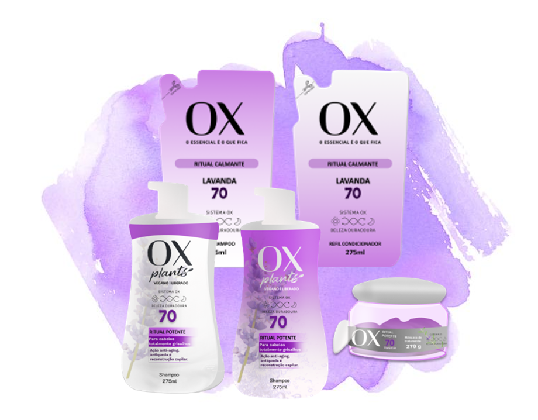

Lavanda
Shampoo, condicionador, máscara e refil
Ox Plants Ritual Potente
|
Chegamos com uma oportunidade incrível de você, nossa cliente, conhecer as novidades de nossa linha, por meio das redes sociais. Nossas potências 30, 50 e 70 são de acordo com a intensidade dos seus fios brancos, e nosso produto te auxilia a se encontrar com seu eu interior. Nosso produto chegou no Instagram, Facebook e com tutoriais no Youtube para ensiná-lo a usufruir do novo Ox Ritual Potente. A @paginadakika, @pri.meiramente e @carlavilhenaa já estão usufruindo dos benefícios da nossa linha! E você, vai ficar de fora? Não perca nossas publicações, que mostram qual a potência ideal para você!! Estamos juntos com você, para te apoiar nesse caminho de descobertas e coragem. Fortemente excelente, Ox Ritual Potente! |
A Ox é uma marca que se importa demasiadamente com o Meio-Ambiente, por isso criou a linha Ox Ritual Potente, que te proporciona cabelos bonitos e saudáveis sem prejudicar a natureza.
Sabemos da importância de cuidar de você protegendo o planeta!
A fórmula da linha tem apenas o necessário para a beleza dos seus fios, sendo que 93% dos ingredientes dos produtos são naturais, 100% veganos e nossas embalagens são recicláveis.
Shampoo, condicionador, máscara e refil
Shampoo, condicionador, máscara e refil
Shampoo, condicionador, máscara e refil
Shampoo, condicionador, máscara e refil